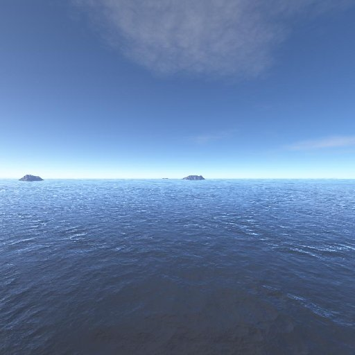
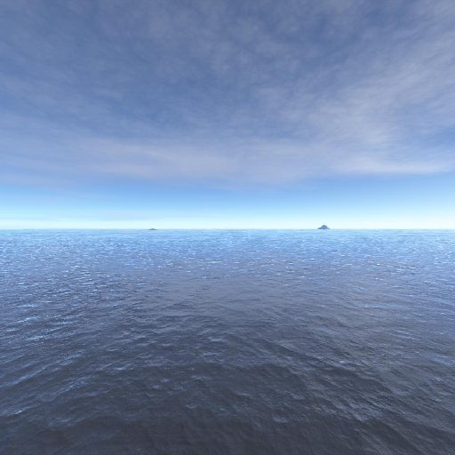
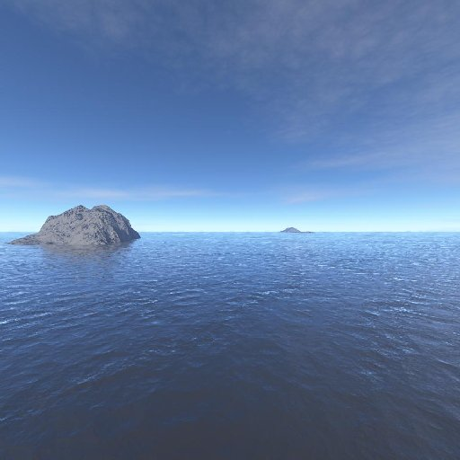
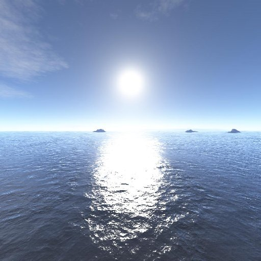
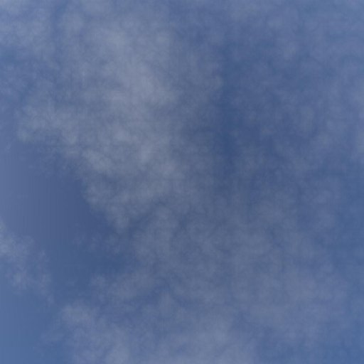
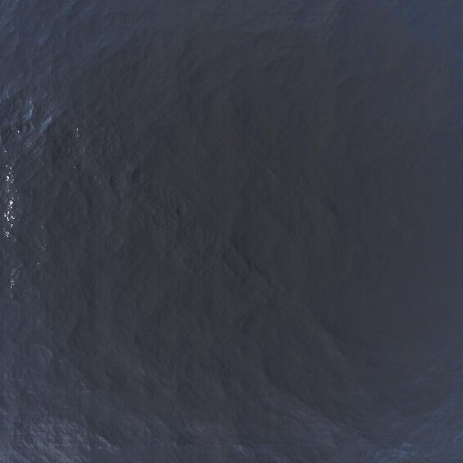

WebAssembly support required! Firefox 57 recommended for now.
Jelly McJelloFace
Controls
X/comma: Switch between orbit and free-camera.
WASDQE/IJKLUO: Move camera - (Orbit mode) ADQE to orbit, WS to zoom - (Free camera mode) WS forward/back, AD left/right, QE down/up.
Spacebar: Look around in free-camera mode.
Click-and-drag to use the laser.
Tab/enter: jolt the cube.
F/H: toggle bead visibility.
Shift+F/H: view debug beads.
Shift+R: Reset.
NOTE TO MY RIGHT-THINKING DVORAK HOMIES: Use grave-accent (`/~) to toggle dvorak controls.
Jelly McJelloFace Readme
Dependencies: WebAssembly, WebGL 2, Garett's tinywebgl-ucla.js file for Web version. SDL2, GLM, OpenGL 3.3 for C++ version (SSE support and _mm-style intel intrinsics also a plus).
This program simulates a cube of jello with a face sculpture made of beads embedded inside. The player can jolt the cube and soften it using a laser. The beads inside move with the jello as it jiggles and deforms. The jello is made up of a 16x16x16 modified mass-spring system: the springs have their spring constant lowered as the laser shines on them, and there's an additional "pressure" force that fights to keep each sub-cube within the grid at a constant volume. This force doesn't get weakened by the laser and allows the cube to lose its shape as the laser weakens it without completely collapsing. Press shift+F to see the debug view for the grid mass-spring system.
Two versions of the program are provided: a Javascript/WebAssembly version and a compiled C++ offline version. The C++ version has better performance (including SIMD support) and extra niceness like resizability and scroll support. Note that both versions depend on the same jellymjf.c backend; the web version depends on the non-human-readable libjellymjf-wasm.js file (and friends) that are cross-compiled from the C backend. If you're grading this I advise that you just trust me when I say that I didn't plagiarize that file and it really did come from the C file, but if you insist, you can go through all seven levels of hell to get an experimental version of emcc working on your computer like I did, and you too can compile that file to WebAssembly yourself and verify that I didn't lie.
This almost certainly won't be an issue, but in case of a dispute, my statement is that my official submission is the C++ version of my project as compiled and run on a SEASnet computer (with minor configuration changes to run in a Visual Studio environment), not the web version. The web version is provided for easy distribution and should behave the same as the C++ version (besides the extra C++ features mentioned above), but in the end it's powered by experimental new technologies like WebGL 2 and WebAssembly while the C++ version is built on established technologies, and in case of calamity I can't stake my life on the web version.
Requirements met:
Hierarchical object: The face made of beads is generated using a hierarchy of coordinate systems. These functions are in beadface.h for the C++ version and the top of index.html for the web version. Hierarchies: world/head/hair/bleached tip; world/head/ear/earring; world/head/eye/white,iris,black loops of eye.
Camera tracking: The camera in the default orbit mode tracks the center of the jello cube (averaged over time to keep you from getting too sick). Jolt the cube with tab and press shift+F to enter the debug view to make this easier to see: there are four beads that show the origin (white) and axes (red green blue) for the world coordinate system, and these will move to one side as the camera follows the cube around in the world.
Custom object and texturing: The cube is my custom object. The positions and normals are recalculated each tick in jellymjf.c, while the texture coordinates are calculated per-vertex in the cube vertex shader to produce reflective and refractive effects. Additional simpler objects include the textured skybox and the icosahedron beads.
Real-time speed: At most 250 ticks are run per second in the program. The main function in the C++ version and the draw_frame function in the web version include a check against last_physics_update to enforce this speed limit.
FPS display: In the web version, a separate canvas is included that displays the FPS of the main canvas twice a second. The C++ version just prints the FPS to the console.
Creativity and complexity: This program is pretty darn quirky and complicated if you ask me.
sor_sea skybox provided by http://www.custommapmakers.org/skyboxes.php





